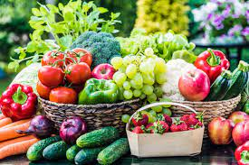
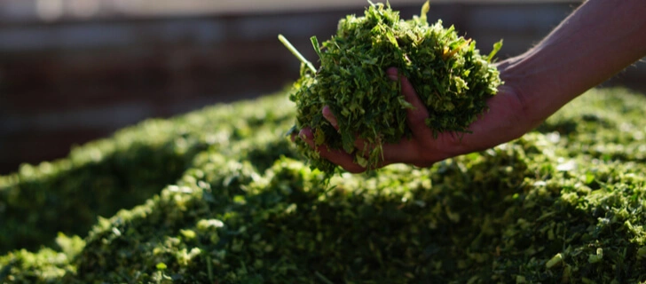
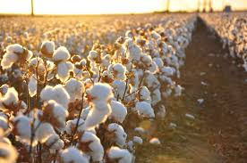
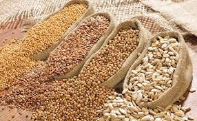
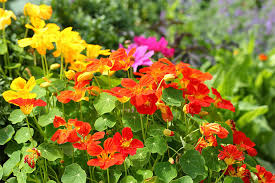
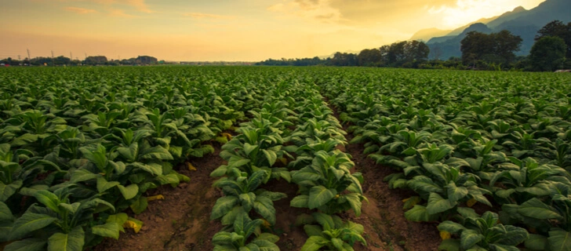

Food plants were historically the first to be harvested and cultivated. They are grown for human consumption. Food plants, particularly grains, are strategically important. At the same time, farmers should keep in mind that while industrial food plant cultivation has many benefits, it can also have negative environmental consequences, such as greenhouse gas (GHG) emissions.

wheat, rice, barley, millet, oats, rye, sorghum, and others. Grains are a rich source of starch, protein,
dietary fiber, and nutrients and are an integral part of the daily diet. In particular, maize, rice,
and wheat provide the most calories and protein consumed in developing countries.
Seeds include several types of field crops, such as cereals, nuts, legumes, and some spices.
Seeds are high in fiber, fats, vitamins, minerals, and antioxidants.
apples and pears, citrus, stone fruits, tropical and exotic fruits, berries, and other types.
Fruits contain a lot of dietary fiber, vitamins, minerals, and antioxidants, such as flavonoids,
which promote good health.
Vegetables are high in water content and low in calories. They are also rich in dietary fiber,
antioxidants, minerals, and vitamins (especially A and C).
There are several types of vegetable crops:
1.root vegetables: beets, carrots, sweet potatoes, turnips;
2.tubers: potatoes, yams;
3.stem vegetables: asparagus, kohlrabi, celery;
4.leafy green: lettuce, spinach, silverbeet;
5.allium or bulb vegetables: garlic, leeks, onions, shallots;
6.head or flower vegetables: artichokes, cabbage, cauliflower;
7.cucumber family vegetables: pumpkin, cucumber, zucchini.
Spices fall into three types: the spices themselves (pepper, ginger), spice seeds,
and herbs.Spices are used sparingly to enhance food flavor and aroma.
They contain essential oils and alkaloids that aid appetite and digestion.

Forage, aka feed, plants contain nutrients that animals require for development.
They are grown for livestock consumption and are essential in pasture management.
Some of the most crucial types of forage crops are sorghum, alfalfa, barley, oats,
millet, soybeans, wheat, and maize.

Forage is classified into two types based on how it is processed:
1.hay is forage that has been cut, dried in the field, and stored;
2.silage is produced by harvesting the plants and storing them in conditions
that allow them to be split (fermented) into acids.
Types of silage crops include perennial and annual grasses and legumes.
With increased global demand for meat, forage production has skyrocketed.
Higher forage production has altered the agricultural landscape, causing massive
deforestation to create grazing pastures for livestock.
Plants grown to produce fiber for textiles, cordage, filling, and paper are known as a fiber
type of crops. The well-known fiber plants are cotton, hemp, jute, kenaf, and flax.
Some of them have a good prospect as agricultural biomass with the potential of being converted
to ethanol.

plants can be processed and broken down into their primary components, including oil.
Today, the oil type of crops is the second most important determinant of the agricultural
economy (after cereals) and is the third largest user of farmland
The essential plants of this type are soybeans, sunflower seeds, rapeseed, canola, and peanuts.
They are high in oils, dietary fibers, proteins, minerals, and vitamins. Apart from producing oil
for human consumption, this type of plants is used in various industries, including soaps, paints,
machinery lubricants, fuel, and many more.

Oil plants also supply the raw materials for biodiesel production. Soybean, rapeseed, sunflower,
camelina, and palm are typical biodiesel sources. Due to palm trees high yield potential,
the palm oil cultivation industry is constantly expanding
Plants grown for decorative purposes in parks, gardens, and landscaping design projects are related
to the ornamental type. Ivy, oleander, holly, tulips, and azaleas are common decorative plants.

Industrial plants are grown for profit and industrial use. They are also referred to as cash or
commercial type of crops and include cotton, jute, sugarcane, sugarbeet, coffee, tea, tobacco,
coconut, and soybeans

As you may have noticed, the same plant can belong to multiple types in the classification
by use. For example, wheat and oats can be food or forage types. Sugarcane provides both edible
sugar and alcohol for bioethanol production. There are, of course, exceptions. Let’s say that
most decorative flowers are as poisonous as they are beautiful.